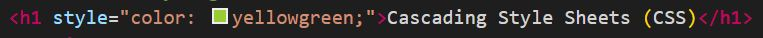
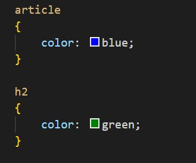
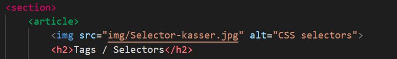
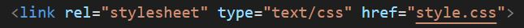

Tags / Selectors
Det, som i HTML hedder "Tags", kaldes i CSS for "Selectors". Forskellen er ikke så vigtig på nuværende tidspunkt, det er blot vigtigt, at du kender begreberne. Først når vi skal til at arbejde med JavaScript bliver forskellen på de to vigtig!
Du skal opfatte dine HTML-tags (eller CSS selectors) som kasser eller områder, som billedet ovenfor viser. Det betyder, at hvis du specificerer en styling på dit article-tag, så vil den styling være gældende for alt indenfor det grønne område.
Sådan bruger du stylesheets
Du kan anvende styling på tre forskellige måder:
- Inline styling (skrives umiddelbart efter dit tag på din HTML-side)
- Internt stylesheet (al din styling skrives i head-sektionen på din HTML-side)
- Eksternt stylesheet (al din styling skrives i en selvstændigt .css fil, som du linker til fra din HTML-side)
Specificitet (eller: hvad slår så igennem?)
Hvis du har stylet på tekstfarven flere forskellige steder er det vigtigt at vide, hvornår det slår igennem, så du kan være sikker på at få det til at se ud, som du gerne vil have.
De tre måder at style på, som er beskrevet ovenfor, har forskellig prioritet. Højest prioritet har altid inline styling. Interne og eksterne stylesheets prioriteres i den rækkefølge, de står i din head. Det betyder, at hvis du linker til dit eksterne stylesheet, før du skriver dit interne stylesheet, så vil det interne stylesheet slå igennem, for det er det, der bliver læst til sidst.
Det er det, der sker lige nu på denne side: først linkes til det eksterne stylesheet, som sætter en lilla tekstfarve på h1'en. Derefter kommer det interne stylesheet, som sætter en rød tekstfarve på h1'en. Da det er den interne style, som er blevet påført til sidst, er det også den, der vil ende med at være gældende for det, du kan se i browseren.
Hvis du linker til dit eksterne stylesheet, efter du har skrevet dit inline stylesheet i head-området, så vil dit eksterne stylesheet slå igenne, for det bliver læst til sidst. Browseren læser altid din HTML-kode kronologisk og tilføjer også CSS i den rækkefølge, det bliver læst.
Prøv at flytte linket til det eksterne stylesheet ned under det interne stylesheet, som ligger i head'en på denne side og se, hvad der sker med skriftfarven på overskriften på siden.
Hvis der herefter bliver tilføjet en inline styling på en h1'er, som fortæller, at denne specifikke h1'er skal have en anden farve, så vil det være den farve, der slår igennem, fordi inline styling altid har højest prioritet.
Prøv at tilføje style="color: yellowgreen;" til h1'eren i toppen af denne side, så der ender med at stå følgende:
Uanset hvad der står i dit interne og eksterne stylesheet, vil farven fra din inline styling slå igennem.
Hvorfor skal vi så bruge den med lavere prioritet?
Vi bruger altid eksterne stylesheets, for så skal vi kun ændre på tingene et sted. Hvis vi på et tidspunkt bliver enige om at ændre tekstfarven på alle overskrifter, så er det et kæmpe arbejde, hvis vi har brugt inline styling og risikoen for fejl er for stor. Vi ville have samme udfordring med et internt stylesheet, som vi skulle ændre på alle sider.
Et af de vigtigste principper, vi arbejder med, når vi skriver kode, er: DRY - Don't Repeat Yourself. Hvis man gentager sig selv unødigt, så øger man også risikoen for at glemme at rette noget et sted og dermed risikoen for at lave fejl.
I hvilken rækkefølge slår CSS-kode i et eksternt stylesheet igennem
Ganske kort sagt: i den rækkefølge browseren læser dine HTML-tags.
Hvis du styler på samme attribut (fx tekstfarven), vil den sidste styling, som bliver læst slå igennem. Se eksemplet i stylesheetet, hvor der er stylet på tekstfarven både på article og på h2. Her slår den grønne farve igennem på h2'eren, fordi din browser først læser article-tagget og gør alt i dit article-område blåt. Bagefter læser den h2-tagget og gør h2 tekstfarven grøn.


Linke til et eksternt stylesheet
Du linker til et eksternt stylesheet i head-delen af dit HTML-dokument.
Et link til et stylesheet består af fire elementer:
- Selve tagget link
- En angivelse af, hvilken relation den linkede fil har med dette HTML-dokument (rel="stylesheet")
- En angivelse af, hvilken type fil det er, du linker til (type="text/css")
- En angivelse af, hvilken fil det er, der linkes til (href="style.css")
Husk at linke til dit stylesheet fra alle dine HTML-sider i dit website.
Fælles opgave
Vi skal nu lave tekstfarven om på al tekst i din body - dvs. at det slår igennem på al tekst på hele siden. Det betyder, at du skal slette både den inline styling og det interne stylesheet og alle de andre tekstfarver, som er angivet i dit eksterne stylesheet.
Lige nu bruger vi CSS' indbyggede farvenavne. På et senere tidspunkt skal vi snakke mere om andre måder at angive farver på. I har hos Brag snakket om både RGB og CMYK og vi skal også lære en tredje måde at angive farver på. Men lige nu bruger vi de indbyggede farvekoder. Hvis du vil se alle farvenavne kan du finde dem her.
Al din tekst i din body skal sættes til farven DarkSlateGrey.
Dine h1'ere skal sættes til farven Midnightblue og dine h2'er sættes til farven SteelBlue.
Fokus på brugervenlighed
En vigtig del af webdesign er at lave hjemmesider, som fungerer for brugerne. Det kan være fristende at lave hjemmesider, som viser, hvad du kan og indeholder en masse forskellige farver og smarte ting. Men vi skal altid have fokus på brugervenlighed. Noget af det, som undersøgelser har vist, fungerer godt for brugerne, er at bruge en lidt mindre hård skriftfarve end sort. Derfor er en meget mørk grå et rigtigt godt alternativ som en brugervenlig tekstfarve.
Når i sidder og læser denne hjemmeside, har i sikkert også bemærket, at det ikke fungerer ret godt med så lange tekstlinjer, som du sidder og læser lige nu i din browser. På et senere tidspunkt vil vi komme ind på, hvordan vi kan lave vores tekstlinjer kortere.
Videre med dit fugleleksikon
Du skal nu arbejde videre på dit fugleleksikon. Start med at lave et eksternt stylesheet og linke til det fra alle dine sider.
Herefter skal du vælge en farve til al tekst, en anden farve til alle h1'ere og en tredje farve til alle h2'ere.
Hvis du bliver færdig med dette, kan du læse mere om stylesheets på w3schools på følgende sider: CSS Introduction, CSS Syntax, CSS How To og CSS Comments.